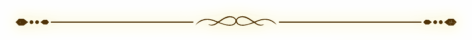

Terakomari
Gandesblood

Daughter of the noble Gandesblood family, Komari spent the last 3 years enjoying the life of a recluse before being suddenly appointed Crimson Lord by the Empress of Mulnite. Despite being
a vampire, she hates drinking blood and as a result she cannot use magic and she has stopped growing. Her favorite food is omelette rice.
VA: Tomori Kusunoki